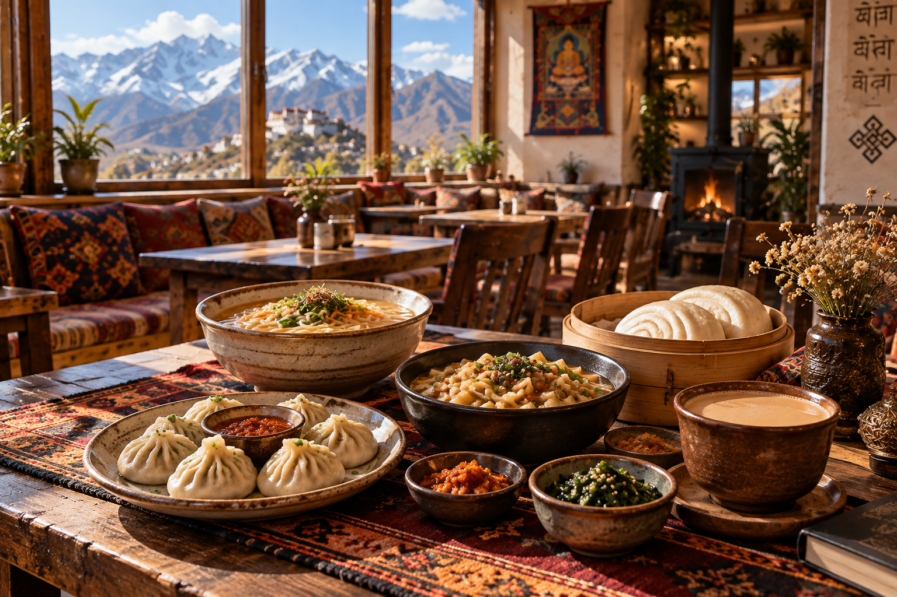

Our story
Rooted in Ladakh.
Wangmo's Coffee is a cozy gathering place in Leh, created around good coffee, comforting food, local character and the simple joy of sharing a table.

Why Wangmo's
A café with a sense of place.
We wanted Wangmo's to feel like the kind of place you discover on a slow day in the mountains: warm timber, woven textiles, familiar flavours and huge windows opening towards the Himalayas.
Our kitchen brings together café favourites and food inspired by Ladakhi and Himalayan traditions, alongside bowls of ramen for anyone craving something warm after a day outdoors.
Above all, Wangmo's is about people — travellers, locals, friends and families finding a little time to sit, eat, talk and enjoy Leh.
LehOur home in Ladakh
☕ + 🥢Coffee & comfort food
LocalLadakhi-inspired flavours
WarmSpaces & conversations
Our philosophy
Good coffee.
Kind people.
“In every cup, a little more of Ladakh.”